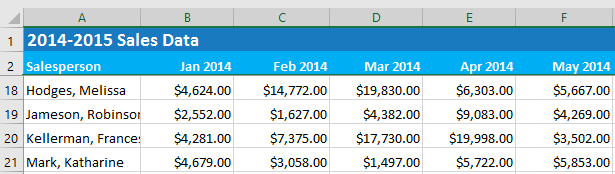
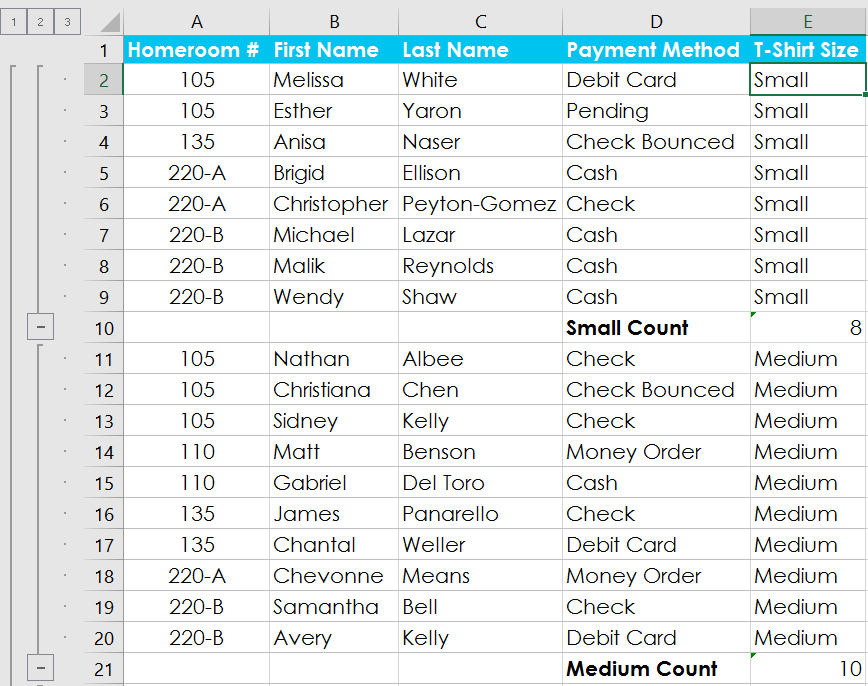
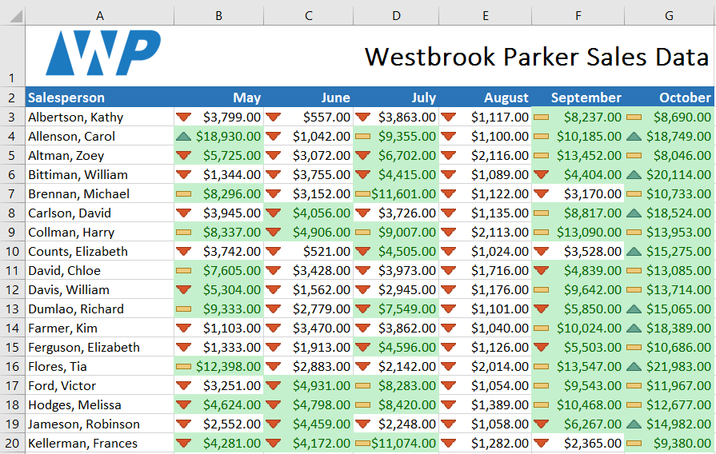

Introducere
 Filtrarea datelor
Filtrarea datelor
 Rezumat date
Rezumat date
 Vizualizarea datelor cu diagrame
Vizualizarea datelor cu diagrame
 Adăugarea formatării condiționate
Adăugarea formatării condiționate

Caietele de lucru Excel sunt concepute pentru a stoca o mulțime de informații. Indiferent dacă lucrați cu 20 de celule sau 20.000, Excel are mai multe funcții care vă ajută să vă organizați datele și să găsiți ceea ce aveți nevoie. Puteți vedea câteva dintre cele mai utile caracteristici mai jos. Și asigurați-vă că revizuiți celelalte lecții din acest tutorial pentru a obține instrucțiuni pas cu pas pentru fiecare dintre aceste caracteristici.
Înghețarea rândurilor și coloanelorPoate doriți să vedeți anumite rânduri sau coloane tot timpul în foaia de lucru, în special celulele antetului. Înghețând rândurile sau coloanele în loc, veți putea derula conținutul dvs. în timp ce continuați să vizualizați celulele înghețate. În acest exemplu, am înghețat primele două rânduri, ceea ce ne permite să vedem datele indiferent de locul în care derulăm în foaia de calcul.

Sortarea datelorPuteți reorganiza rapid o foaie de lucru prin sortarea datelor. Conținutul poate fi sortat alfabetic, numeric și în mai multe alte moduri. De exemplu, puteți organiza o listă de informații de contact după nume de familie.
Filtrarea datelor
Filtrarea poate fi folosită pentru a restrânge datele din foaia de lucru, permițându-vă să vizualizați numai informațiile de care aveți nevoie. În acest exemplu, filtrăm foaia de lucru pentru a afișa numai rândurile care conțin cuvintele Laptop sau Proiector în coloana B.
Rezumat date
Comanda Subtotal vă permite să rezumați rapid datele. În exemplul nostru, am creat un subtotal pentru fiecare dimensiune de tricou, ceea ce face ușor să vedem de câte vom avea nevoie pentru fiecare dimensiune.

Formatarea datelor ca tabelLa fel ca formatarea obișnuită, tabelele pot îmbunătăți aspectul registrului de lucru, dar vă vor ajuta și la organizarea conținutului și vă vor face datele mai ușor de utilizat. De exemplu, tabelele au opțiuni de sortare și filtrare încorporate. Excel include și câteva stiluri de tabel predefinite, permițându-vă să creați rapid tabele.
Vizualizarea datelor cu diagrame
Poate fi dificil să interpretezi registrele de lucru Excel care conțin o mulțime de date. Diagramele vă permit să ilustrați grafic datele din registrul de lucru, ceea ce facilitează vizualizarea comparațiilor și a tendințelor.
Adăugarea formatării condiționate
Să presupunem că aveți o foaie de lucru cu mii de rânduri de date. Ar fi extrem de dificil să vedem modele și tendințe doar din examinarea informațiilor brute. Formatarea condiționată vă permite să aplicați automat formatarea celulei, inclusiv culori, pictograme și bare de date, la una sau mai multe celule în funcție de valoarea celulei.

Folosind Găsiți și înlocuițiCând lucrați cu o mulțime de date, poate fi dificil și consumator de timp să găsiți anumite informații. Puteți căuta cu ușurință în registrul de lucru folosind funcția Găsiți, care vă permite, de asemenea, să modificați conținutul folosind funcția Înlocuire.